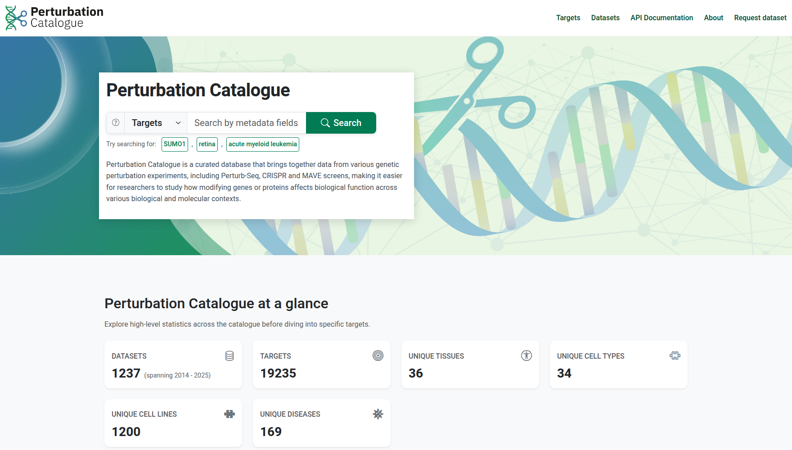
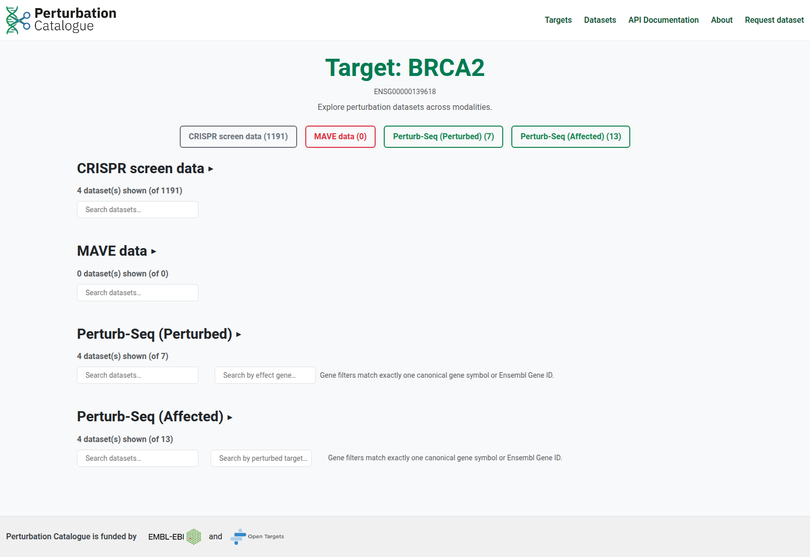
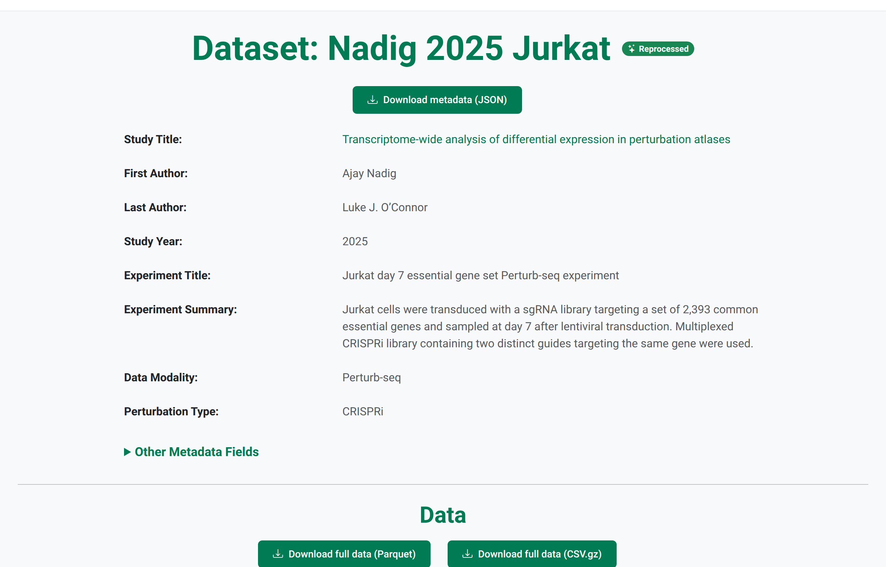

CRISPR screens · 1,201 datasets
Perturbed gene → phenotype / fitness changes.
An Integrated Resource for Exploring the Impact of Genetic Perturbations
European Bioinformatics Institute, Wellcome Genome Campus, Hinxton, United Kingdom

A single pooled genome-scale Perturb-Seq dataset can simultaneously profile tens of millions of cells across hundreds of thousands of perturbations. That scale could reveal robust biology across studies, but identifiers, metadata, assays and processing pipelines differ. The Perturbation Catalogue aims to unify datasets across modalities and provide a shared access path for this evidence.
Perturbed gene → phenotype / fitness changes.
Perturbed gene → scRNA-seq, cell-wide transcriptome changes.
Combinatorial variant library → sequence-function maps.



Structured JSON for custom pipelines, reproducible analysis and machine learning.
{
"perturbation": {
"perturbed_target_ensg": "ENSG00000108064",
"gene_symbol": "TFAM"
},
"effect": {
"effect_gene_ensg": "ENSG00000210082",
"gene_symbol": "MT-RNR2",
"log2fc": -2.682
}
}Data is available in Parquet and CSV.gz, and metadata as JSON.